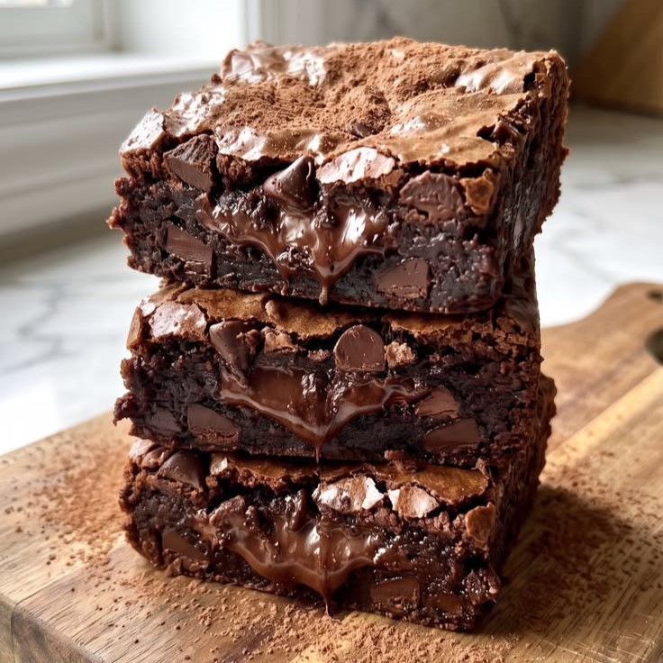
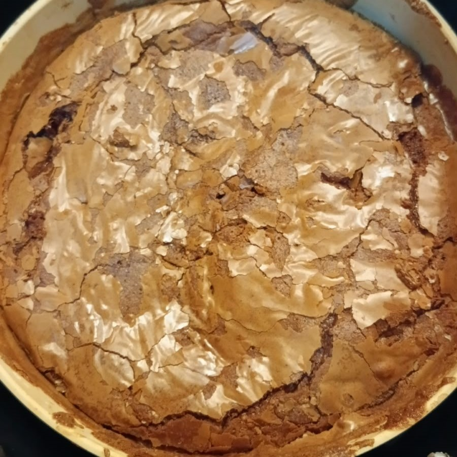
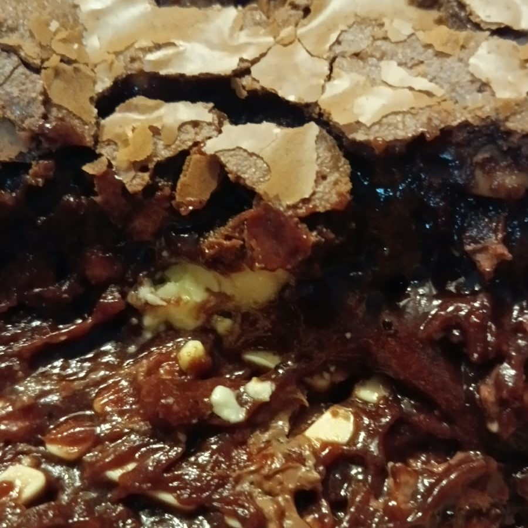
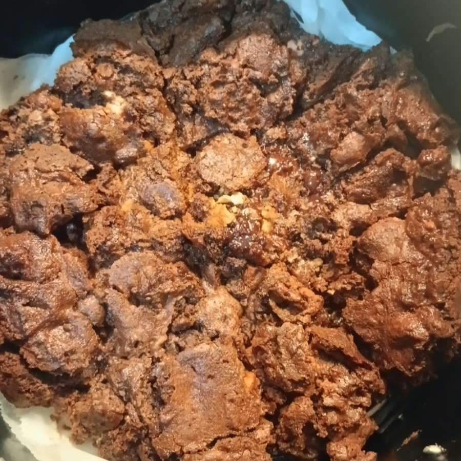
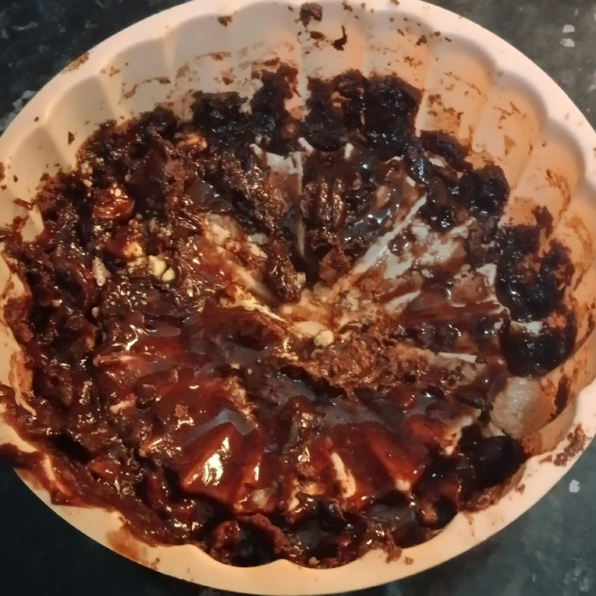
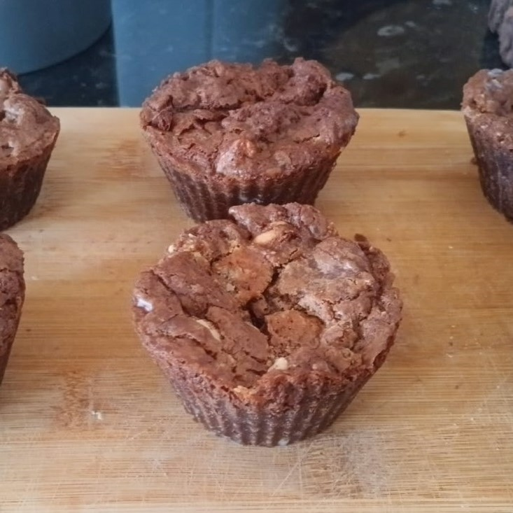

Brownie, 2 falhas e 2 sucessos
17 de agosto, 2026
17 de agosto, 2026

Brownie
Não o link não está quebrado, esta receita é secreta e muito especial, eu paguei muito caro por ela (valeu a pena) e não darei ela a ninguém! Nem mesmo o Batman seria capaz de tirar essa informação de mim!
Bom, no momento em que estou escrevendo esta entrada eu fiz o Brownie duas vezes, devo dizer que das duas vezes ele não cozinhou muito bem haha...
As duas vezes ele cozinhou bem encima e ficou com uma casca bastante linda, apesar de eu não ter registros da primeira casca sem ela estar completamente destruida, eu tenho fotos da segunda que colocarei abaixo. Mas embaixo eu devo dizer que ele ficou... simplesmente, cru.

Por fora, lindo!

Mas por dentro...
A primeira vez que fiz o brownie e tirei ele e vi que estava completamente cru, decidi imediatamente colocar ele de volta na air fryer, a esse ponto não lembro por quanto tempo ou quantas vezes aquela massa votou para o fogo, mas devo dizer que foram muitas, no final eu tinha uma grande massaroca de chocolate que mais parecia um biscoito do que um brownie, mesmo assim, mesmo assim, tenho que admitir que estava uma delicia, e apesar de eu não ser nenhum especialista, tenho que dizer que não é uma opinião minha, aquilo estava objetivamente saboroso.
Quero ser claro aqui em dizer que eu atribuo todo o subjetivo sucesso desta primeira tentativa do brownie a receita e a sua criadora. Apesar da primeira tentativa ter sido um "fracasso" ali eu tinha decidido que faria aquela receita quantas vezes fosse necessário, até acertar, bom, não é como se ela durasse muito por aqui.
Agora o fracasso da primeira receita, e vou tomar essa liberdade, eu atribuo a maldita forma de silicone que simplesmente não cozinha a massa na parte de baixo sem importar o que eu faça!
No fim o que deu certo na segunda foi, depois de cozinhar a parte de cima novamente e a parte de baixo ficar crua (mesmo que relativamente melhor que a primeira vez), foi colocar a massa em formas infividuais menores, o brownie ficou parecendo um cupcake, mas pelo menos está bonitinho, cozinhado, e naturalmente, saboroso.

A primeira falha

Maldita forma
Mas chega de falar da parte má disso tudo, tenho que afirmar que apesar de tudo o gosto é maravilhoso, a massa é deliciosa ainda mais quando eu encontro um pedaço de chocolate no brownie, especialmente o branco, devo dizer que ele fica muito gosto depois de tostado dentro da massa, as nozes também dão um contraste bastante interessante, não sou nenhum especialista, mas nunca comi um brownie tão saboroso! Posso pensar em algumas diferenças comparado a outras receitas que já vi, mas não vou falar delas porque como pontuei no inicio desta entrada, paguei caro por esta receita e não estarei compartilhando-a tão facilmente!
Bom, acho que é só por esta entrada, concluo que a receita é maravilhosa e eu certamente farei ela muuuitas vezes mais, me sinto completamente afortunado de tê-la, e as sombras sussurram sobre outras versões da receita... especialmente uma de leite ninho me chama muito a atenção, quem sabe, eventualmente, eu não escrevo algo aqui sobre ela.

Sucesso?